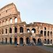
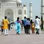

3. Petra (Jordania)
Situado en el desierto del sudoeste de Jordania, este yacimiento arqueológico hunde sus raíces
en el del año 300 a. C. y llegó a ser la capital del reino nabateo. El acceso a Petra ya es un
espectáculo en sí mismo: el cañón estrecho de Al Siq. La ciudad está repleta de tumbas y templos
excavados en acantilados de piedra arenisca rosada que han dado en llamarla la Ciudad Rosa. La
construcción más famosa es, probablemente, Al Khazneh (también conocido como El Tesoro), un
templo de 45 metros de altura con una fachada ornamentada de estilo griego
La Historia de Petra (Jordania)
4. El Coliseo Romano (Italia)
El Coliseo se convirtió en el mayor anfiteatro romano, con una estructura elíptica de 188 metros de
longitud, 156 metros de ancho y 57 metros de altura. Realizado en ladrillo y cubierto con travertino
se dividía en cinco niveles con una capacidad para más de 50.000 personas.

La Historia del Coliseo Romano (Italia)
5. Taj Mahal
El Taj Mahal es considerado el más bello ejemplo de palacio, estilo que combina elementos de
las arquitecturas islámica, persa, india e incluso turca. Este monumento ha logrado especial
notoriedad por el carácter romántico de su inspiración.

La Historia de Taj Mahal
6. Cristo De Corcovado (Brasil)
Geografía urbana, mar, montaña y selva. Todo eso, ¡ahí es nada!, conforma el entorno de la escultura
de art decó más grande del mundo: el Cristo de Corcovado, también conocido como el Cristo Redentor.
La Historia de Cristo De Corcovado (Brasil)
7. Machu Picchu (Perú)
Machu Picchu es el sitio arqueológico inca más sobresaliente debido a su creativo diseño urbano, la
belleza de su arquitectura y el fino trabajo en piedra de sus construcciones. En su planificación se
aprovechó notablemente la topografía de la cima de la montaña a la que transformó en una imponente
llaqta.
La Historia de Machu Picchu

.jpeg)